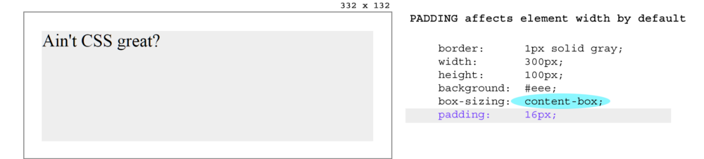

翻译自Thinking Inside The Box ‒ CSS Box Mode
在掌握CSS盒子模型以前去认识下HTML元素的CSS属性是很诱人的。你肯定已经在chrome的开发者console上看过它们。它们看起来是这样的：
这个盒子在CSS盒子模型中是内容区域。
padding, border 和 margin 默认都是0px。HTML元素默认的CSSbox-sizing样式是content-box，下图是一个300x100(border设1px为了看得清楚)的盒子：
当我们加 16px 的 padding的时候，开始变得好玩了：

Padding的厚度现在围绕着元素。注意，元素的物理尺寸现在是332 x 132! 而不是原来的 300x100。因为 32（16+16）px的padding加到了每个方向上。
其实这不算是一个问题，事实上在大部分的网站上我们就会看到外部padding的实现，因为我们假定默认的都是好的。
然而，有时候这会使得元素的尺寸预测变得复杂。如果我们在计算尺寸的时候已经包含了padding不是更好吗？这完全可能！
这就需要把box-sizing设置成padding-box:
正如我们所想，现在padding就被包含在了盒子里面！这样就保留了原始的300x100盒子的尺寸。
这是一个很好的模型用来创建像素级别的用户接口元素。
但是不要忘记了，我们还有一个border。幸运的是，我们同样可以通过设置box-sizing: border-box的方法来把border加入到元素的尺寸内部。
但首先，我们先来看一下设置了默认padding和border的元素是什么样子的：
使用了border-box就会把border和padding加入到盒子里：
完美！
现在padding和border都加入到了盒子内部了。但是，margin宝宝呢?!如果有一个margin-box来包含三个属性岂不妙哉？
但现实很骨感，根据margin的定义它是一个内容以外的区域。
所以即使你有内心的欲望想要实现这个margin-box，但是它并没有太大的意义。
译者总结
面试很常问到的问题，盒子模型就是把DOM元素看成一个盒子，去拼凑出我们的页面，其中盒子模型包括下面几个主要属性(从内到外)：
- width/height
- padding
- border
- margin
另外一个重要的属性是box-sizing,IE默认的是border-box是比较符合人类直观想象的，而Chrome等主流浏览器用的是content-box。
主要区别就在于 *-box 表示了尺寸会包含到什么属性以内。例如padding-box就会包含padding和width/height,border-box就会包含border,padding和width/height。但是需要注意的是：没有margin-box，因为margin本来的定义就是在内容区域以外的区域。
·